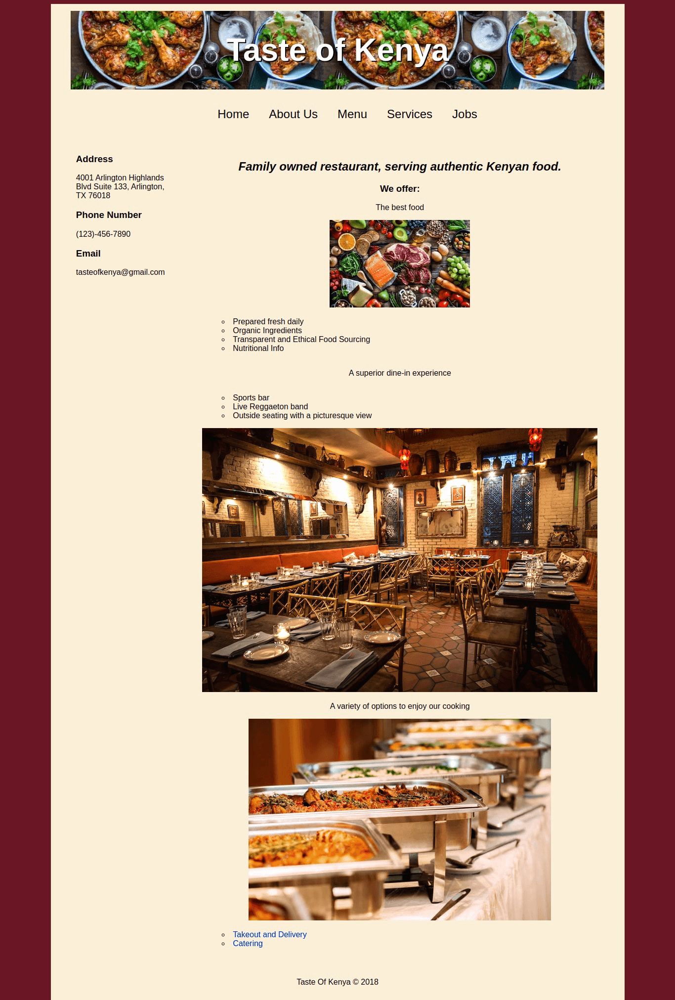

Taste of Kenya
Table of Contents
Description
Details
An individual project for my Web Design class. I could create a basic website for any purpose (a business, a blog, etc.)
Objective
- Build a website based on my idea - a fictional restaurant called Taste of Kenya.
Journey
Design choices
- Color
- The darker, warm palette was inspired partially by the Kenyan flag colors, and also due to feeling that a warmer palette would be more appetizing.
- Typography
- Photography
- Inviting, warm, and colorful pictures that are appetizing and comforting to potential customers.
Conclusion
What I'd Do Differently
- Create a hero section with a strong call to action with the internet marketing concepts I know now.
- The opening map image is dull and detracts from the rest of the page. The header background-image could work as a hero image instead.
- The call to action would revolve around placing an order or visiting.
- Add images to the menu section.
- I had challenges with the images, so refrained from adding pictures to the menu. In hindsight, this would help further convince visitors to dine with Taste of Kenya.
- Organize long text blocks.
What I Learned
- What do you need users to accomplish– purchase a product, subscribe to your newsletter? – these belong in strong call to action buttons.
- What information do users need to complete these actions? Place them in prominent places, such as appropriately labeled navigation links, footers, or highlighted page content.
- How can they get a sense of your website’s purpose in general? – include a hero message.
Beyond just pleasing images and colors, the key to building good sites is prioritizing user needs and conveniences, as well as knowing your main goal of the site.